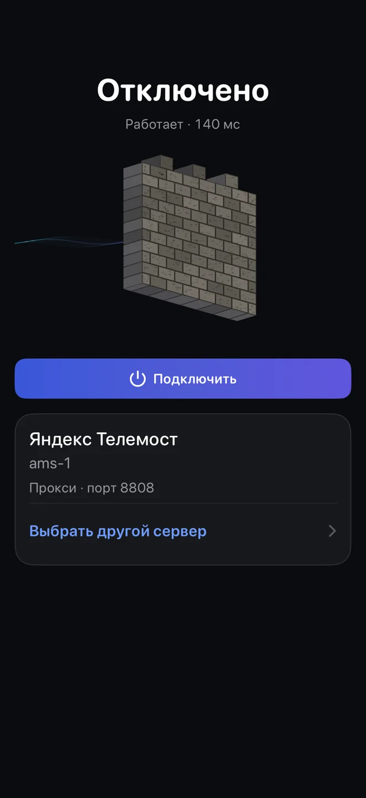
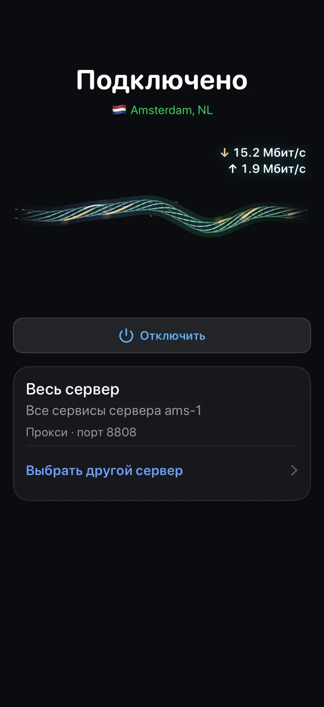
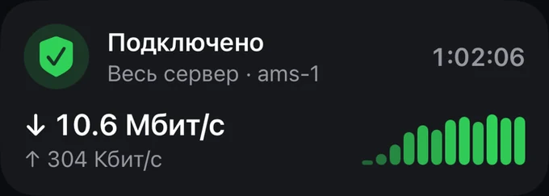
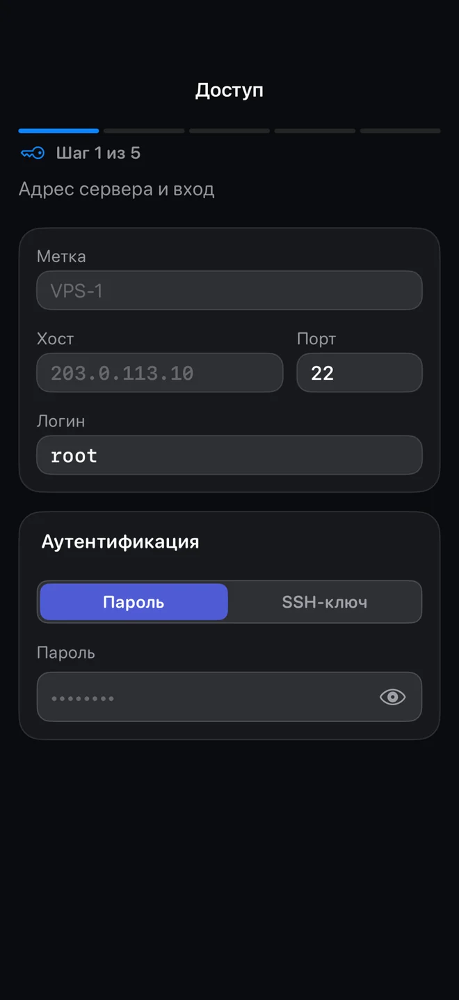

iPhone and iPad
iOS and iPadOS 17+
Install the .ipa with Sideloadly, AltStore or SideStore. With a free Apple ID, iOS only allows proxy mode. A whole-phone VPN needs a paid developer account.
Beta 3.0 · iPhone, iPad and Android
olcOS joins a call on Yandex Telemost, VK Calls, SaluteJazz, Jitsi or MTS Link and sends your phone's traffic through a server you own. To the network it is just a video call.



Tap Connect on the screenConnected · whole server ams-1
How it works
olcOS enters the video call as an ordinary participant. Your server is waiting in the same room.
Traffic is packed into video frames or the call's data channel. Your provider sees a connection to the calling service, not to your server.
The server picks the traffic up from the room and sends it on; replies come back the same way. If a room closes, olcOS reconnects or moves to another one.
Features
No terminal, no config files. The server, rooms, keys and access for your family all live in the app. Screenshots show the Russian interface; the app also runs in English.
Got a link, a QR code or a subscription? Paste it. Have a VPS? Give the app its address and password. Have nothing yet? The app has a list of free servers.
Telemost, VK Calls, SaluteJazz, Jitsi and MTS Link, each with its own connection. If you don't need a call at all, there is a direct VLESS + REALITY mode.
Several rooms are bonded into a single link. Big downloads use all of them at once, and if one room drops, the connection stays up.
olcOS measures every room on its own and all of them together. The fastest one gets a badge; a silent one is honestly marked as not responding.
Give your server to another phone or tablet with a single link. New rooms and keys reach it automatically, and you can see who connected when and how much they used.
A VPN for the whole phone, or SOCKS5 for individual apps such as Telegram. In Auto mode olcOS picks whatever the system allows.
Server
Any Linux VPS with root access and 1 GB of memory will do. You don't even have to open a terminal: enter the address, login and password in the app, and olcOS sets everything up in 5–15 minutes.
curl -fsSL https://raw.githubusercontent.com/olcOS/olcos/main/install.sh |
sudo bashDebian, Ubuntu, Fedora or CentOS. The script installs everything it needs.
It appears at the end. The phone that scans it becomes the owner of the server.
If your host has its own firewall, allow incoming connections to the server agent and the invite service.

Download
The files are in the GitHub releases, next to the source code of each app.
iOS and iPadOS 17+
Install the .ipa with Sideloadly, AltStore or SideStore. With a free Apple ID, iOS only allows proxy mode. A whole-phone VPN needs a paid developer account.
Android 8.0+
Download the .apk, allow installs from that source and open the file. The system asks for VPN permission once.
Linux · root · 1 GB of memory
Debian, Ubuntu, Fedora or CentOS. Installed with one command or straight from the app over SSH.
SHA-256 checksums are listed in the release notes. On Android you can get updates automatically with Obtainium. Building from source is covered in the documentation.
Speed and limits
The ceiling comes from the calling service, not from your server. Below are measurements from the release test bench of the olcrtc core. Your numbers will differ with your network and the load on the service.
Source: olcrtc transport settings and test bench notes (in Russian).
Apps that need UDP or IPv6 may not work, such as calls in some messengers and online games.
Or limit guests. That is why olcOS has several services, room bonding and automatic reconnects.
The interface and compatibility are still changing. If something breaks, open an issue.
FAQ
Didn't find yours? Ask in the GitHub issues.
The apps are free and open source under the MIT license. The only thing you might pay for is a VPS, if you rent your own server.
No. You can paste a link, QR code or subscription someone gave you, or pick a server from the list in the app. But olcOS is built around your own server: that way your traffic doesn't pass through anyone else's hands.
That is how iOS works: an app signed with a free Apple ID can't turn on a VPN. The SOCKS5 proxy still works in apps that let you set one, such as Telegram. A whole-phone VPN works once the app is signed with a paid developer account.
Yandex Telemost, VK Calls, SaluteJazz, Jitsi and MTS Link. Telemost needs a Yandex account, VK Calls a VK sign-in or a call link, MTS Link a permanent meeting from your account. SaluteJazz and Jitsi need no account. There is also a mode without a call: VLESS + REALITY straight to your server.
Yes. On iPhone and iPad olcOS speaks English, Russian and French; on Android, English and Russian. The screenshots on this page show the Russian interface.
Anything that only uses UDP or IPv6. Websites, messaging, email and most apps run over TCP and work fine.
The calling service sees that you are in a call. Your server sees where your traffic goes next, so it should belong to you or to someone you trust. The code of the apps and the server is open for anyone to check.
Use olcOS within the laws of your country and the terms of the services your traffic passes through. The project is open and collects nothing on servers of its own: it doesn't have any.
Install the app, bring up a server and connect. All of it free and open.
Every version, the source code and the changelog are on GitHub.